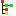

PV Tree¶
The PV Tree displays the hierarchical data flow between EPICS records. It displays the record types and their current values as well as severity/status. It attempts to reflect the data flow by traversing input links (INP, INPA, DOL, …).
The PV Tree has two modes:
- “Run” :
In this mode it will always display the current value of each item in the tree.
- “Freeze on Alarm”
 :
: In this mode, updates pause as soon as the root item of the PV Tree goes into alarm.
Usage¶
Enter a name into the “PV” text box, and see what happens.
Tool Bar Buttons¶
- ,
Changes the PV Tree mode between “running” and “freeze on alarm”.

Collapse the tree, i.e. close all sub-sections of the tree.

Display all items in the tree that are in an alarm state. Note that this is performed whenever you push the tool bar button. If the PV tree items update, branches will not automatically show or hide based on their alarm state, because this could result in a very nervous display for a rapidly changing PV tree. Whenever you desire to update the tree to show/hide items, push the button.
- 
Expand all sub-sections of the tree.
Limitations¶
This tool uses the EPICS network protocol, Channel Access, to read PVs. There is no way to query EPICS V3 IOCs for their database information to determine the available “input” links.
The knowledge of which links to follow for each record type is therefore configured into the EPICS PV Tree application. It is at this time not configurable by end users, but people with access to the source code can determine the syntax from the Settings.java file and override the site-specific settings.